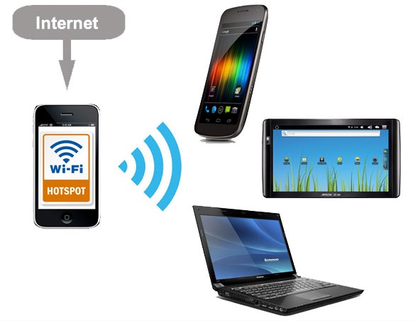

WiFi standards
IEEE 802.11
The original! Created in 1997. Devices using this haven’t been made for over a decade and won’t work with today’s equipment.
IEEE 802.11a
Created in 1999, this version of Wi-Fi works on the 5GHz band. This was done with the hope of encountering less interference since many devices (like most wireless phones) also use the 2.4GHz band. 802.11a is fairly quick too, with maximum data rates topping out at 54Mbps. However, the 5GHz frequency has more difficulty with objects that are in the signal’s path, so the range is often poor.
IEEE 802.11b
Also created in 1999, this standard uses the more typical 2.4GHz band and can achieve a maximum speed of 11Mbps. 802.11b was the standard that kick-started Wi-Fi’s popularity.
IEEE 802.11g
Designed in 2003, the 802.11g standard upped the maximum data rate to 54Mbps while retaining usage of the reliable 2.4GHz band. This resulted in widespread adoption of the standard.
IEEE 802.11n
Introduced in 2009, this version had slow initial adoption. 802.11n operates on both 2.4GHz and 5GHz, as well as supporting multi-channel usage. Each channel offers a maximum data rate of 150Mbps, which means the maximum data rate of the standard is 600Mbps.
IEEE 802.11ac
The ac standard is what you will find most wireless devices using at the time of writing. Initially released in 2014, ac drastically increases the data throughput for Wi-Fi devices up to a maximum of 1,300 megabits per second. Furthermore, ac adds MU-MIMO support, additional Wi-Fi broadcast channels for the 5GHz band, and support for more antenna on a single router.
IEEE 802.11ax
Next up for your router and your wireless devices is the ax standard. When ax completes its rollout, you will have access to theoretical network throughput of 10Gbps—around a 30-40 percent improvement over the ac standard. Furthermore, wireless ax will increase network capacity by adding broadcast subchannels, upgrading MU-MIMO, and allowing more simultaneous data streams.
Wi-Fi Direct
Wi-Fi™ Direct is a feature that allows audio and video content to be played back wirelessly from a personal media player or mobile phone directly to a compatible BRAVIA® TV without the need for a home network connection.
One of the most important is that Wi-Fi Direct can handle more information at higher speeds than Bluetooth — around ten times the rate in optimal conditions.
One of the most significant advantages of Wi-Fi Direct is how versatile it can be where there’s no Wi-Fi network to act as a go-between for devices. Multiple devices can link to each other and share important files in casual settings or desperate circumstances alike, without the security worries (and time-consuming process) that come with connecting to a hub or central network first.
You can often tell when a device offers Direct, because, when you are searching, it will pop up with a wireless network of its own, usually one that starts with “DIRECT” followed by a product name or number.
Some of the most common uses of Wi-Fi Direct these days include:
Fast file sharing: Direct is an excellent way to quickly share large files with a friend or team when setting up wired connections isn’t feasible.
Photo printing on wireless printers: Direct can handle a large amount of wireless information, making it ideal for serious wireless printing jobs.
Screencasting and screen sharing: From playing mobile games on a big screen to sharing family photos on your TV or digital portrait, Wi-Fi Direct is used for all sorts of screen sharing tasks.
Playing games together: If everyone has the same game on their phones, they can connect with Direct and play along even if there’s no Wi-Fi around.
Speedy syncing: Some devices will also use Wi-Fi Direct to sync their information and update their media. This feature can make the process much faster, especially if it has to add a lot of new media at the same time (think about updating old music playlists, for example).
Enabling NFC: We’re used to thinking of NFC as its own wireless technology, but these quick connections tend to use Wi-Fi Direct to transmit information.
DLNA
DLNA allows you to wirelessly send content from devices like laptops, tablets and smartphones to a compatible TV, taking the hassle out of sharing media in the home. DLNA stands for Digital Living Network Alliance, and was set up by Sony in 2003.
DLNA is an industry-wide standard for sharing data over a home network. Depending on the DLNA-compatible devices you own, you might be able to stream films from your laptop to your TV, play an MP3 stored on your phone over your hi-fi system, or print a photo from your tablet on your home printer.
There are two main types of DLNA products: DLNA servers, such as PCs or a networked storage device, and DLNA clients. You need one of each to stream content using DLNA. The DLNA server is the device that stores and sends your movies, music and pictures. PCs running Windows have DLNA built into their operating system, and Windows Media Player can act as a media server that manages where the content is delivered and what content is accessible. A DLNA client is the device on which the content is viewed or played, and such products include most smart TVs, soundbars and digital radios. Some products, like DLNA-enabled TVs, might even come with software that, once installed, lets your PC talk directly to your television.
Wi-Fi hotspot
Using my phone as a hotspot (also known as Wi-Fi tethering) means that whenever I have a couple of bars of signal strength, I can get my tablet or laptop online — and share my internet connection with work colleagues.A phone hotspot can be a serious collaboration tool for a group of businesspeople attempting to work together. The potential ranges from a group on the way to the airport in a van finishing a group presentation to an accounting team working in a conference room with an internet connection independent of the company they’re auditing. It can also provide a connectivity lifeline for a home office when the Wi-Fi goes down.
Bluetooth
Bluetooth is a standard for the short-range wireless interconnection of mobile phones, computers, and other electronic devices.
The Bluetooth logo is the combination of “H” and “B,” the initials of Harald Bluetooth, written in the ancient letters used by Vikings.
Bluetooth 1.0 and 1.0B (1999)
The first Bluetooth specs.
Bluetooth 1.1 (2001)
Improvements to reliability and interoperability; mostly backward compatible but not 100%.
Bluetooth 1.2 (2003)
BT 1.2 (Basic Data Rate) was the first widely used Bluetooth technology. Adaptive frequency hopping (AFH) helped avoid interference with Wi-Fi and other technologies in the same frequency. Pairing speed was improved.
Bluetooth 2 (2004)
Branded as Bluetooth 2.0 + EDR (Enhanced Data Rate), three bit encoding (versus one) increased the data rate from 1 to 3 Mbps (in practice 2.1 Mbps). Interference handling was improved, and less power was used.
Bluetooth 2.1 (2007)
Secure Simple Pairing (SSP) was added to make pairing faster and more secure. Encryption was made mandatory, security was improved, and less power was used.
Bluetooth 3 + HS (2009)
Branded as Bluetooth 3.0 + HS (High Speed), it started the connection via Bluetooth but transmitted data over Wi-Fi.
Bluetooth 4 (2010)
Introduced low-power Bluetooth Low Energy, branded as "Bluetooth Smart."
Bluetooth 4.1 (2013)
More efficient data exchange and better co-existence with LTE frequencies. BT 4.1 maintains connections with less manual intervention, and devices can be both client and hub at the same time, enabling Bluetooth devices to communicate with each other. Prior to BT 4.1, devices transmitted to a hub either built into the computer or in a stand-alone dongle.
Bluetooth 4.2 (2014)
Designed for the Internet of Things (IoT), BT 4.2 increased the payload size in the Bluetooth packet by 10x, dramatically lowering the overhead to yield 2.5 times more data. The low-power wireless personal area network (WPAN) version of IPv6 (6LoWPAN) is supported, which enables billions of devices to have a unique IP address. It also supports beacon privacy, which prevents retail shops from sensing a user's presence .
Bluetooth 5 (2016)
A more robust version with extended battery life, BT 5 increased the outdoor transmission range from 50 to 200 meters. Location services are enhanced because it can convey more information prior to establishing a connection. The first smartphones to support BT 5 were the Galaxy S8 and iPhone 8 and X.
GPS
Global Positioning System (GPS) units in smartphone communicate with the satellites to determine our precise location on Earth. The GPS technology doesn’t actually use internet data this is why we can find our location on maps even after losing the signals, but the map itself is blurry as it requires internet to load the details — this is how offline map works. GPS is used in all location-based apps like Uber and Google Maps. The accelerometer, gyroscope, magnetometer, and GPS work together to create the perfect navigation system in your smartphone.
NFC
NFC is a mainstream wireless technology, thanks to the growth of online payment systems like Samsung Pay and Google Pay.
NFC stands for “Near Field Communication” and, as the name implies, it enables short-range communication between compatible devices. This requires at least one transmitting device, and another to receive the signal.
A range of devices can use the NFC standard and will be considered either passive or active.
Passive NFC devices include tags, and other small transmitters, that can send information to other NFC devices without the need for a power source of their own. They don’t process any information sent from other sources, and can’t connect to other passive components. These often take the form of interactive signs on walls or advertisements.
Active devices are able to both send and receive data, and can communicate with each other as well as with passive devices. Smartphones are by far the most common form of active NFC device. Public transport card readers and touch payment terminals are also good examples of the technology.
Just like Bluetooth and Wi-Fi, and all manner of other wireless signals, NFC works on the principle of sending information over radio waves.
The major argument in favor of NFC is that it requires much less power consumption than Bluetooth. This makes NFC perfect for passive devices, such as the advertising tags mentioned earlier, as they can operate without a major power source.
But NFC does have one major advantage: faster connectivity. Due to the use of inductive coupling, and the absence of manual pairing, it takes less than one-tenth of a second to establish a connection between two devices. While modern Bluetooth connects pretty fast, NFC is still super handy for certain scenarios. Namely mobile payments.
Samsung Pay, Android Pay, and even Apple Pay use NFC technology — though Samsung Pay works a bit differently than the others. While Bluetooth works better for connecting devices together for file transfers, sharing connections to speakers, and more, we anticipate that NFC will always have a place in this world thanks to mobile payments
Infrared
Using an infrared (IR) connection, computers equipped with an IR sensor could transfer files and other digital data over short-range wireless signals. This IR technology was similar to that used in consumer-oriented TV remote control units but the much faster and far more versatile Bluetooth and Wi-Fi have since replaced it.
Unlike Wi-Fi and Bluetooth technologies, infrared network signals cannot penetrate walls or other obstructions and work only within a direct line of sight.
Although IR no longer plays a role in transferring files from one computer to another, it is still a valuable technology in other fields. Among them are:
• Night vision: Infrared amplifies light in low-light situations.
• Art history: researchers use IR technology to peek through layers of paint on works of art to see what lies beneath.
• Heating: Infrared generates and conducts heat, so it's popular in saunas, restaurant food-warming stations, and cooking appliances such as grills.
• Thermography: IR technology determines the relative temperature of objects.
• Weather forecasting: weather satellites use IR technology to determine temperature and cloud formations.
USB-C
USB-C is the emerging standard for charging and transferring data. Right now, it’s included in devices like the newest laptops, phones, and tablets and—given time—it’ll spread to pretty much everything that currently uses the older, larger USB connector. The physical USB-C connector isn’t backwards compatible, but the underlying USB standard is. You can’t plug older USB devices into a modern, tiny USB-C port, nor can you connect a USB-C connector into an older, larger USB port.
FM Radio
It’s nice to listen to music for free without using up data.
Radio is a piece of electronic equipment used for listening to radio broadcasts.
FM stands for Frequency Modulation, sound is transmitted through changes in frequency. So, when you’re switching between stations, your FM antenna is alternating between different frequencies, and not amplitudes, which produces a much cleaner sound and allows for smoother transitions with little to no audible static.
While all phones are mass-manufactured in one country, they are sold around the world. So, the FM receivers will have to be tuned according to where it will be sold. This is a major hassle for the manufacturers, and pretty much increases their production efforts, so they technically just decide against enabling it all together.
Certain companies can earn more if they keep it disabled. This move forces consumers to pay for services or music-streaming platforms .